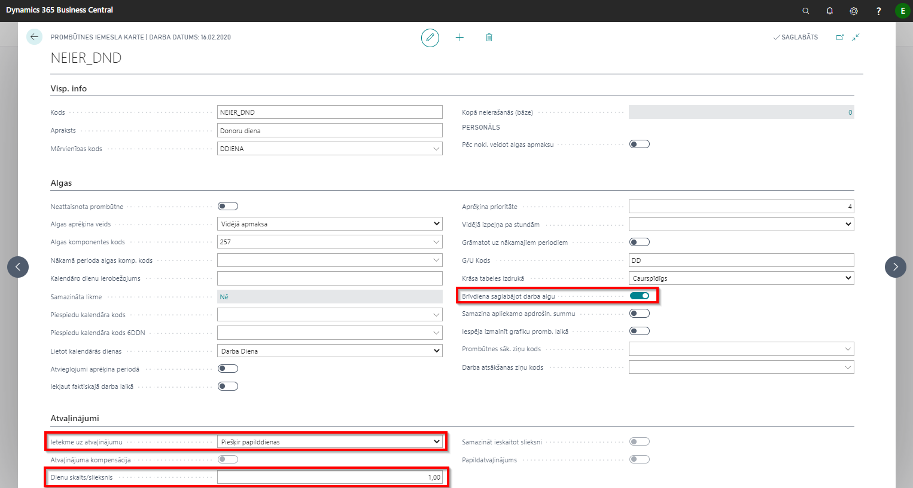
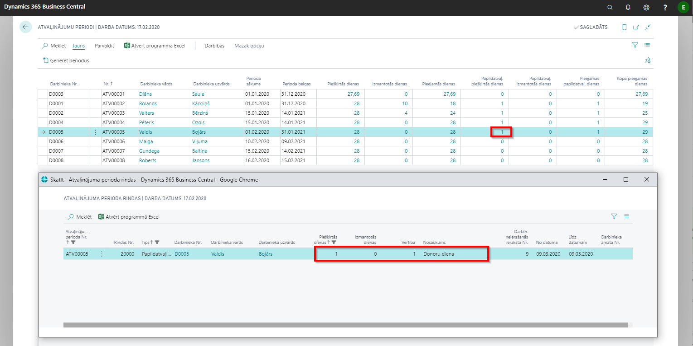
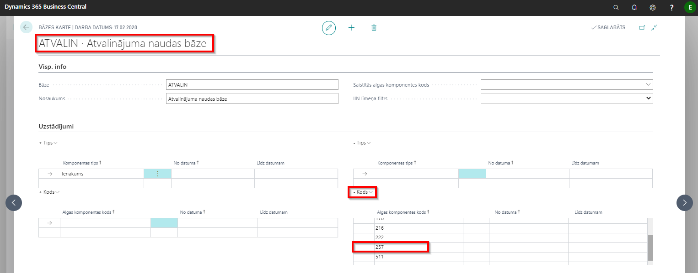
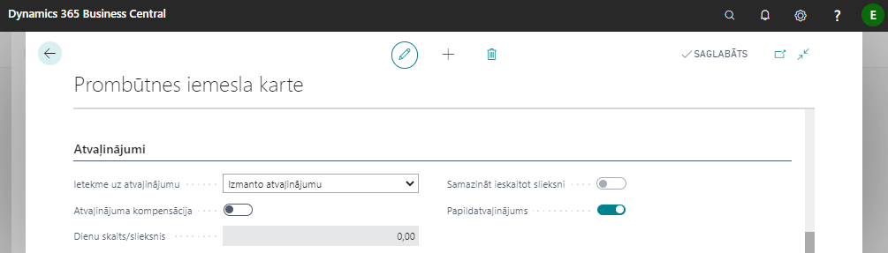

Donoru dienas
Prombūtnes kartē NEIER_DND (atrodams: Lomu centrs - Prombūtnes - Prombūtnes iemesli) jānorāda, ka par šo prombūtni pienākas 1 papildatvaļinājuma diena, bet šīs prombūtnes aprēķina veids ir saglabājot darba algu.

Tip
Jāpievērš uzmanība: ja ielikts ķeksis “Brīvdiena saglabājot darba algu”, ievadot prombūtni sistēma prombūtnes kartē uzreiz aprēķinās dienas/stundas izpeļņu ar pazīmi “Vidējā izpeļņa izmainīta”. Veicot algas aprēķinu, tiks ignorēts prombūtnes iemesla aprēķina veids un tiks ņemta vērā vidējā izpeļņa no prombūtnes kartes.
Dienas / stundas aprēķins: tiek analizētas darbinieka algas komponentes, kurām ir pazīme Pamatalga. Tiek apstrādāti sekojošie veidi: proporc. nostr. dienām, proporc. nostr. stundām, stundu, dienu. Gadījumā, ja darbinieka kartē pazīme Vidējā samaksa par stundām, tad tiek rēķināta arī stundu izpeļņa. Stundu skaits apmaksai tiek ņemts no grafika. Ja darbiniekam šajā periodā tika mainīta algas, tad tiek analizēta katra diena un izrēķināta vidējā par šo periodu.
Atvaļinājuma periodos automātiski tiks izveidots ieraksts par piešķirto papildatvaļinājuma dienu. Atvaļinājuma periods – prombūtnes No datuma periods.

Donora dienas apmaksai nevajadzētu būt iekļautai vidējā izpeļņā. Tāpēc Bāzē ATVALIN apmaksas komponentes kodam jābūt izslēgtam no bāzes.

!!! Atpūtas dienai par donoru dienu labāk izveidot jaunu prombūtnes kodu, kuram būtu sekojošie uzstādījumi:

Tādā gadījumā, rēķinot atlikumu uz jebkuru datumu, dienas piešķiršanai / norakstīšanai tiks izmantots princips “stājas spēkā uzreiz” ( nevis proporcionāli).